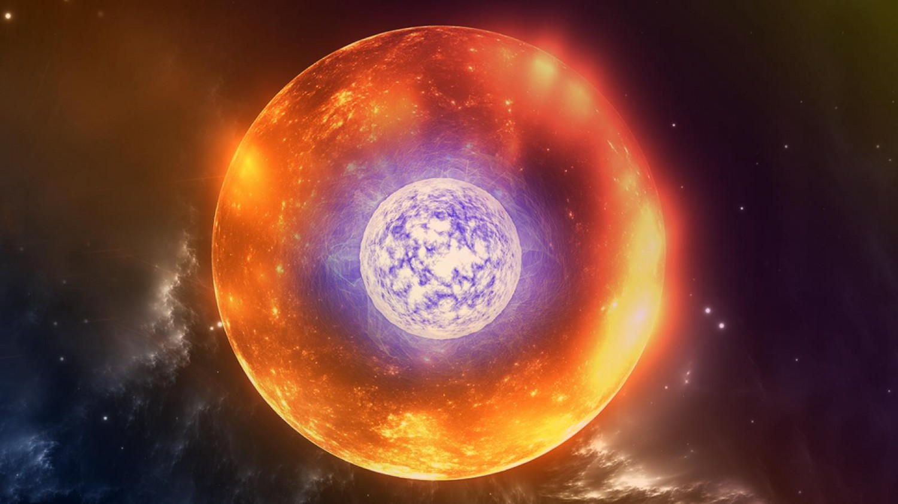

Um buraco branco é uma hipotética região do espaço-tempo que seria o oposto de um buraco negro. Enquanto os buracos negros têm uma gravidade tão intensa que nada pode escapar de sua atração, os buracos brancos seriam regiões onde nada pode entrar.
O pôr do sol em Marte apresenta características distintas e fascinantes em comparação com o pôr do sol na Terra. Devido à diferença de atmosfera e características geológicas do planeta vermelho, as cores e o cenário durante o pôr do sol são únicos.
É um dos cinco exoplanetas que orbitam uma estrela distante chamada Cancri 55, a cerca de 40 anos-luz do Sistema Solar, mas visível a olho nu na constelação de câncer.
Auroras em Júpiter e Saturno são fenômenos espetaculares e similares às auroras da Terra,Em ambos os planetas, as auroras são causadas pela interação das partículas carregadas com a atmosfera e o campo magnético.
5-Bonecaa

As bonecas russas são um conjunto de bonecas de madeira que são colocadas uma dentro da outra, de tamanhos progressivamente menores. A analogia com estrelas pode se referir a um possível conceito de estrelas dentro de estrelas, cada uma menor e mais densa do que a anterior.